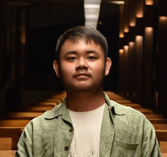

Nicholas Silva Tee
4th Year Undergraduate
University of California, Santa Cruz
Currently Attempting:
Bachelor of Science, Computer Science
Bachelor of Arts, Computation Mathematics
School Email: ntee@ucsc.edu
Personal Email: ntee924@gmail.com
About me
I am currently on my 4th year of my undergradute program. I hope to finish both the B.S. and B.A. by the end of the year. I am also in the 4+1 program so I hope to enroll into UCSC again as a graduate student as I wish to pursue an M.S. in computer science. I am currently interested in learning more about machine learning or computer vision, however, I am yet to decide.
Tutor and Reader
- (Reader) Fall 2021 CSE0-103: Computational Models
- (Reader) Fall 2021 CSE0-101: Introduction to Data Structures and Algorithms
- (Reader and Tutor) Spring 2021 CSE0-160: Introduciton to Computer Graphics
- (Reader) Winter 2021 CSE0-102: Introduction to Analysis or Algorithms
- (Tutor) Winter 2021 CSE0-12: Computer Systems and Assembly Language
- (Tutor) Fall 2020 CSE0-12: Computer Systems and Assembly Language
- (Reader) Fall 2020 CSE0-20: Beginning Programming in Python
Currently Enrolled in:
- CSE-200: Research and Teaching in Computer Science
- CSE-185: Technical Writing for Computer Science
- CSE-112: Comparative Programming Languages
- MUSC-80N: Music of the Grateful Dead